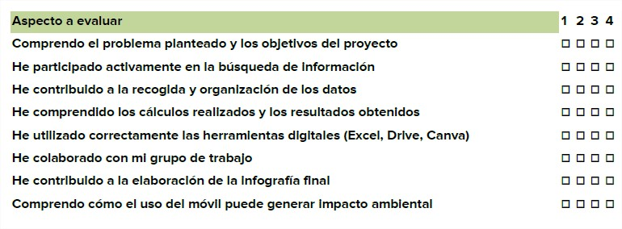

Rúbrica
| Nivel excelente | Nivel adecuado | Nivel básico | Nivel inicial | |
|---|---|---|---|---|
| Comprensión del reto y planteamiento del problema1 | Comprende completamente el problema, identifica correctamente los datos necesarios y formula hipótesis razonadas. (2.5) | Comprende el problema y plantea hipótesis razonables, aunque con alguna imprecisión. (1.75) | Comprende parcialmente el problema y necesita ayuda para identificar los datos relevantes. (1.50) | Presenta dificultades para comprender el problema planteado. (1.25) |
| CBúsqueda y selección de informacióniterios 2 | Selecciona información relevante y fiable, organizándola adecuadamente para el proyecto. (2.5) | Encuentra información adecuada, aunque con menor capacidad de selección u organización. (1.75) | Encuentra información limitada o poco organizada. (1.50) | Tiene dificultades para localizar información relevante. (1.25) |
| CRecogida y organización de datosriterios 3 | Registra y organiza los datos de forma clara y estructurada utilizando herramientas digitales. (2.5) | Registra los datos correctamente, aunque con menor organización. (1.75) | Recoge datos de forma incompleta o poco clara. (1.50) | Presenta dificultades para recoger o registrar los datos. (1.25) |
| Tratamiento matemático de los datos4 | Realiza correctamente los cálculos, interpreta los resultados y elabora gráficos adecuados. (2.5) | Realiza la mayoría de los cálculos correctamente y representa algunos datos gráficamente. (1.75) | Realiza cálculos con errores o presenta dificultades para interpretar los resultados. (1.50) | No logra realizar los cálculos o interpretar los datos correctamente. (1.25) |
| Uso de herramientas digitales | Utiliza de forma autónoma y adecuada herramientas digitales (Excel, Drive, Canva)X (2.5) | Utiliza correctamente las herramientas con alguna ayuda puntual. (X1.75) | Utiliza las herramientas con dificultad o necesita ayuda frecuente. (1.5) | Presenta dificultades importantes en el uso de las herramientas (1.25) |
- Actividad
- Nombre
- Fecha
- Puntuación
- Notas
- Reiniciar
- Imprimir
- Aplicar
- Ventana nueva
Diana de Autoevaluación
Sistema de autoevaluación por parte del alumnado, diana de evaluación:
Instrucciones para el alumnado: Valora tu trabajo en cada uno de los aspectos del proyecto marcando una puntuación del 1 al 4, donde:
1. Necesito mejorar
2. Aceptable
3. Bien
4. Muy bien

Criterios de evaluación
| TAREA | CRITERIO DE EVALUACIÓN | AGRUPAMIENTO | TIEMPO APROXIMADO | HERRAMIENTA QUE SE LE SUGERIRÁ AL ALUMNADO |
| Presentación del reto y estimación inicial del impacto del uso del móvil | 2.1 Analizar y comprender un problema identificando los datos relevantes y estableciendo estrategias de resolución |
Grupo clase | 20 min | Google Classroom / Padlet |
| Búsqueda y selección de información sobre consumo energético y huella de carbono digital | 2.2 Seleccionar información relevante y utilizar diferentes herramientas para interpretar situaciones relacionadas con contextos reales | Grupos de 3-4 alumnos | 35 min | Navegador web / Padlet |
| Recogida y organización de datos sobre el uso del móvil del alumnado | 5.1 Recoger, organizar y representar datos utilizando herramientas digitales adecuadas | Grupos de 3-4 alumnos | 55 min | Google Drive (hoja de cálculo) / Excel |
| Tratamiento matemático de los datos y cálculos del consumo energético | 2.3 Aplicar procedimientos matemáticos y herramientas digitales para resolver problemas en contextos reales | Grupos de 3-4 alumnos | 55 min | Excel |
| Representación gráfica de los resultados obtenidos | 5.2 Interpretar y representar datos mediante tablas y gráficos utilizando herramientas digitales | Grupos de 3-4 alumnos | 55 min | Excel / Google Docs |
| Interpretación de resultados y estimación de emisiones de CO₂ | 2.4 Analizar y valorar la validez de las soluciones obtenidas y su interpretación en el contexto del problema | Grupos de 3-4 alumnos | 55 min | Excel / Google Docs |